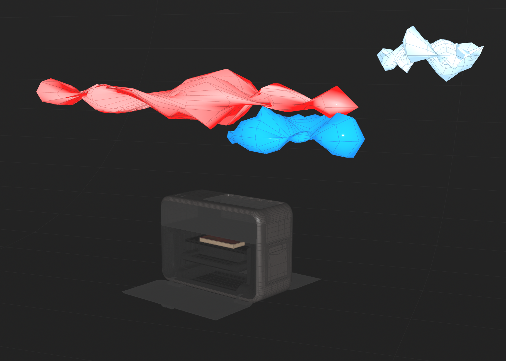
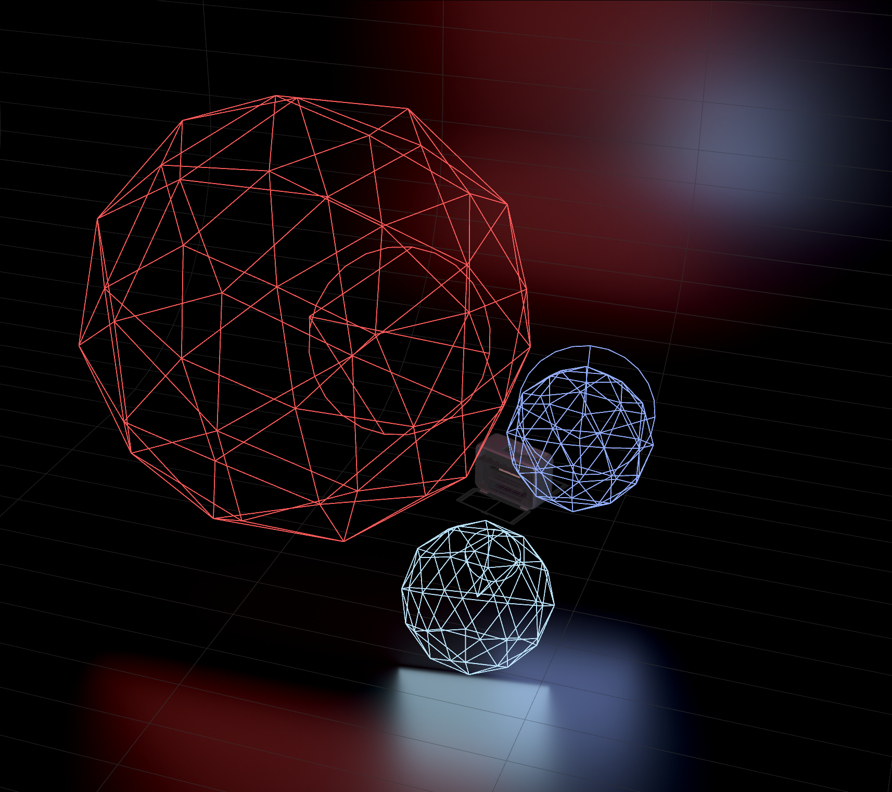
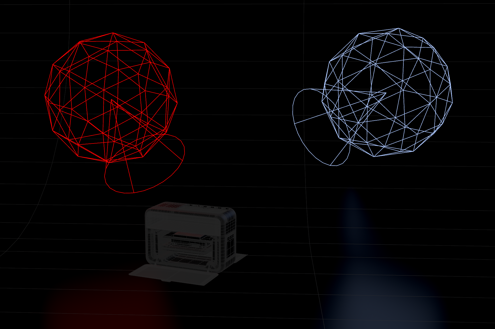

Week 09 - Polish Final Result | Refine Sound
Mar 03 - 09, 2026
Mentors Feedback and Suggestions
Use depth of field or vignette to guide focus and hide unnecessary details.
Shot 1-2: Particles may be too saturated
Shot 1-2: Lighting spill in shot 1 is stronger than in Shot 2—needs consistency
Shot 2-3: Hide more details to create a more mysterious look
Shot 3: Tighten depth of field to help hide low-resolution painting
Shot 3: Wood material looks too bright, smooth, and plastic—soften bump and add more variation/dirt
Shot 4: Replace warm/orange light with cooler tones and slightly reduce overall lighting
Shot 4: Camera moves feel similar, add more progression
Completed
Team Tasks
Shot 1-2: Desaturate the particles
Shot 2: Add depth of field
Shot 3: Adjust depth of field
Shot 4: Adjust lighting
Individual Tasks
Shot 2: Add red spill light
Shot 3: Adjust wood material
Refine and add sound effects
To-Do Lists
Team Tasks
Render high-resolution stills of each shot
Technical Poster
Breakdown
Individual Tasks
Personal effects breakdown
Shot 4 Colored Lights
Use mesh lighing and spot lighings to add color to the scene
Process

Create objects in obj level then use as a mesh light in Solaris

Spot lights for background lighting

Colored lights on the printer using spot lights